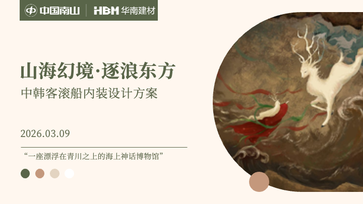
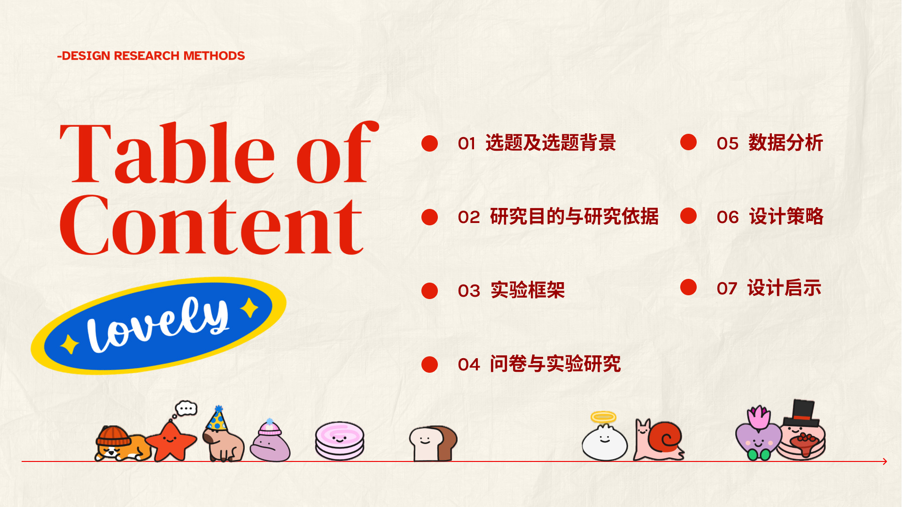

俞之筱 | Zhixiao Yu
用户研究员 / 体验设计师
用户研究
产品经理
体验设计师
专注于用户行为研究与体验系统设计，通过数据分析与设计方法的结合，
构建从用户洞察到产品与服务体验落地的完整设计路径。
数理分析能力
艺术与工程跨界融合
AI工作流提效
网页开发与部署
专业能力体系
具备用户研究、产品设计与数据分析交叉领域的实践经验，专注于复杂系统中的用户行为建模与体验优化。
在多个真实项目中完成从用户研究 → 数据分析 → 设计转化的完整链路，形成以“研究驱动设计”为核心的方法体系。
语言能力
英语六级（CET-6）
可进行学术交流与英文项目汇报
用户研究能力
- 用户访谈设计与执行 (定性/定量)
- 问卷设计与数据分析
- 用户画像构建与聚类分析
- 场景卡建模与行为路径拆解
- SWOT / 5W1H / 商业模式画布
数据分析能力
- SPSS统计分析
- KANO-AHP-QFD 跨学科量化方法
- AHP-TOPSIS 多指标决策模型
- 结构化数据分析与决策支持
设计实践能力
- 高级艺术审美素养
- 产品设计 - 从概念到落地实现
工具
Figma
Rhino
AutoCAD
Photoshop
Illustrator
Xmind
AI 驱动的研究与工作流
该方法已在多个项目中实际应用，实现了从“信息收集 → 结构建模 → 洞察生成 → 输出表达”的闭环。
1
行业信息与竞品分析
Gemini / 豆包
2
访谈结构与框架设计
ChatGPT
3
辅助访谈记录与转录
通义听悟
4
数据整理与洞察提取
NotebookLM
5
场景建模与输出自动化
Gemini
Featured Projects

User Research / Spatial Experience
中韩邮轮内装设计调研
基于属地文化分析与用户分层模型，构建航线客群的空间需求转化体系。
NDA PROTECTED
Confidential Research
房地产高净值用户需求洞察
涉及用户研究方法体系、问卷结构逻辑、分群模型及需求映射系统设计。

Product & UI/UX Design
《元游》传统文化体验平台
省级创新创业项目。涵盖用研、商业模式画布、系统交互及高保真界面设计。

Behavioral Research
Figma FigPals 用户行为研究
针对设计协作工具生态中的微互动体验进行行为模式分析与需求挖掘。
Research & Academic
EI 会议论文
《基于AHP-TOPSIS模型的邮轮航线优化策略研究》
通过构建多指标决策模型，量化评估航线体验要素，为空间与航线设计提供数理依据。点击查看详情 >>
Profile
俞之筱
Product Design
User Researcher / Experience Designer
Focus
用户研究 / 产品体验 / 数据驱动设计
Location
广州 / 深圳
Education
本科 湖北美术学院 - 产品设计
硕士 广州美术学院 - 设计